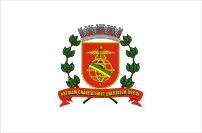

SANTOS

A história de Santos está diretamente ligada ao período colonial do Brasil, sendo
um dos principais portos do país desde o século XVI. A cidade teve grande importância
no escoamento da produção agrícola, especialmente do café, durante o século XIX.
Seu porto se tornou o maior da América Latina, consolidando Santos como um dos
principais centros econômicos do Brasil.
Ao longo do tempo, a cidade se desenvolveu com infraestrutura moderna, turismo
forte e relevância histórica. Além disso, Santos é conhecida por seus jardins
na orla, considerados os maiores jardins de praia do mundo.
Hoje, Santos é um importante centro urbano e econômico da Baixada Santista.
- População (Censo 2022): 418.608 habitantes
- População estimada (2025): ~440 mil habitantes
- Área territorial: 280,67 km²
- Densidade demográfica: 1.491 hab/km²
- IDH: 0,840 (muito alto)
- PIB per capita: ~R$ 60 mil
BAIRROS
BAIRROS (ZONA LESTE - NOROESTE)
- Ponta da Praia
- Aparecida
- Embaré
- Boqueirão
- Gonzaga
- José Menino
- Campo Grande
- Marapé
- Encruzilhada
- Macuco
- Centro
- Zona Noroeste
ESTATISTICAS
GEOGRAFIA
SANTOS POSSUI CERCA DE 7 QUILOMETROS DE PRAIAS URBANIZADAS, SEU TERRITORIO É PARCIALMENTE PLANO COM MORROS E ÁREAS DE MATA ATLÂNTICA, E ALTITUDE MÉDIA BAIXA
ECONOMIA
SUA ECONOMIA É FORTEMENTE BASEADA NO PORTO DE SANTOS, SENDO O MAIOR DA AMÉRICA LATINA, ALÉM DO TURISMO E SERVIÇOS
| AREA |
PORCENTAGEM NO PIB |
VALOR NO PIB (30 BILHÕES TOTAL) |
| PORTO/SERVIÇOS |
TURISMO |
INDUSTRIA |
| 60% |
25% |
15% |
| 18 BILHÕES |
7.5 BILHÕES |
4.5 BILHÕES |
MIDIA

ORLA DE SANTOS

PORTO DE SANTOS

MUSEU DO CAFÉ

BAIRRO GONZAGA

PRAIA DO EMBARÉ
HOME